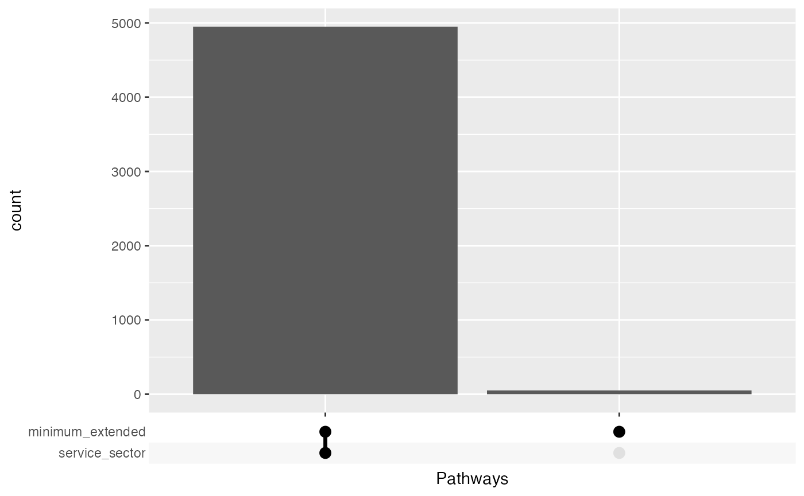
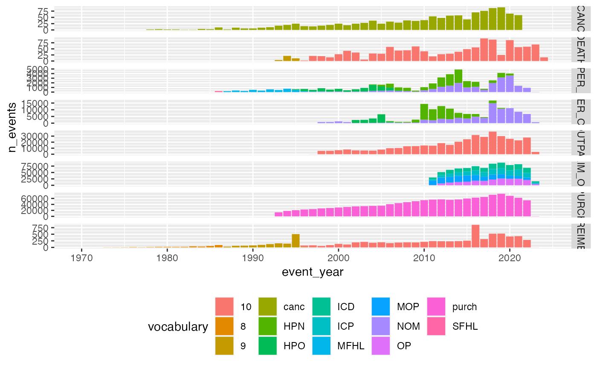
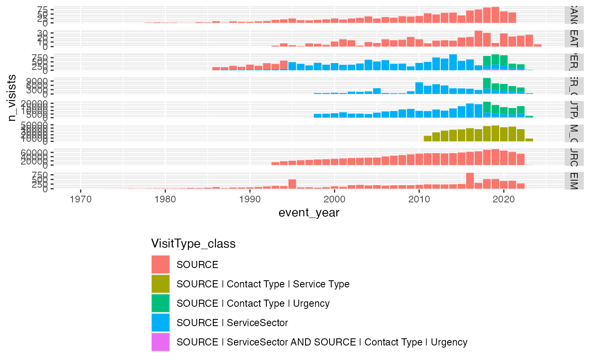
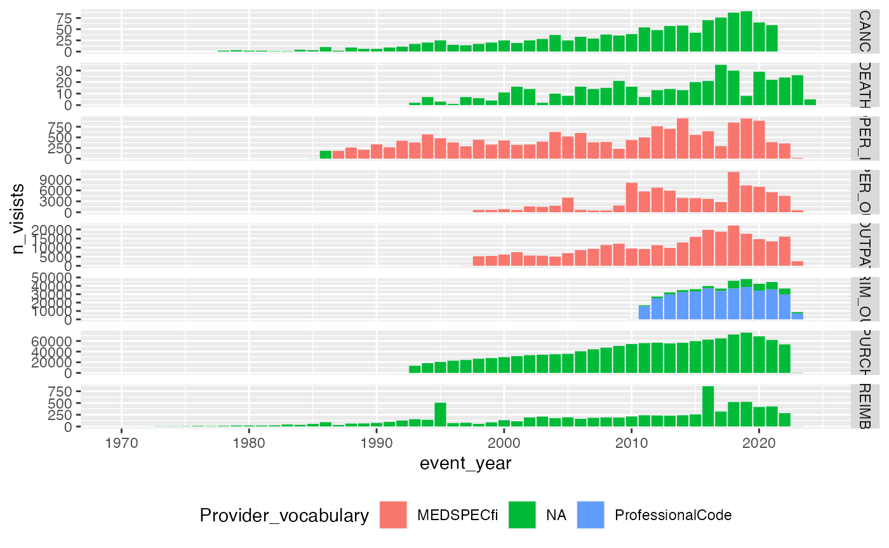

create_dummy_data.Rmd
#library(LongitudinalDummyDataGenerator)
devtools::load_all(".")
output_folder <- "../output_dummy_generator/"
service_sector_data_version = "R11v1"
person_level_data_version="R11v1"
n_patients_minimum <- 5000
tictoc::tic()
generate_all_dummy_data_to_files(
output_folder = output_folder,
service_sector_data_version = service_sector_data_version,
person_level_data_version = person_level_data_version,
n_patients_minimum = n_patients_minimum,
seed = 13,
nTreaths=(parallel::detectCores() -2)
)
tictoc::toc()
file_name <- stringr::str_c("dummy_service_sector_", service_sector_data_version, ".txt" )
service_sector_data <- readr::read_tsv(
file.path(output_folder, file_name),
col_types = readr::cols(.default = readr::col_character()))
file_name <- stringr::str_c("dummy_minimum_extended_", person_level_data_version, ".txt" )
minimum_extended <- readr::read_tsv(file.path(output_folder, file_name))
#> Rows: 5000 Columns: 22
#> ── Column specification ────────────────────────────────────────────────────────
#> Delimiter: "\t"
#> chr (7): FINNGENID, SEX, SMOKE2, SMOKE3, SMOKE5, regionofbirthname, COHORT
#> dbl (11): BL_YEAR, BL_AGE, HEIGHT, WEIGHT, regionofbirth, movedabroad, NUMB...
#> lgl (3): HEIGHT_AGE, WEIGHT_AGE, SMOKE_AGE
#> date (1): APPROX_BIRTH_DAY
#>
#> ℹ Use `spec()` to retrieve the full column specification for this data.
#> ℹ Specify the column types or set `show_col_types = FALSE` to quiet this message.
library(tidyverse)
#> ── Attaching core tidyverse packages ──────────────────────── tidyverse 2.0.0 ──
#> ✔ dplyr 1.1.2 ✔ readr 2.1.4
#> ✔ forcats 1.0.0 ✔ stringr 1.5.0
#> ✔ ggplot2 3.4.2 ✔ tibble 3.2.1
#> ✔ lubridate 1.9.2 ✔ tidyr 1.3.0
#> ✔ purrr 1.0.1
#> ── Conflicts ────────────────────────────────────────── tidyverse_conflicts() ──
#> ✖ dplyr::filter() masks stats::filter()
#> ✖ dplyr::lag() masks stats::lag()
#> ℹ Use the conflicted package (<http://conflicted.r-lib.org/>) to force all conflicts to become errors
bind_rows(
service_sector_data |> distinct(FINNGENID) |> mutate(table="service_sector"),
minimum_extended |> distinct(FINNGENID) |> mutate(table="minimum_extended")
) |>
group_by(FINNGENID) |>
summarise(Pathways = list(table)) |>
#
ggplot(aes(x = Pathways)) +
geom_bar() +
ggupset::scale_x_upset()
service_sector_data_vocab <- service_sector_data |>
mutate(
vocabulary = dplyr::case_when(
SOURCE %in% c("INPAT", "OUTPAT") ~ ICDVER,
SOURCE %in% c("PRIM_OUT", "OPER_IN", "OPER_OUT") ~ stringr::str_extract(CATEGORY, "^[:upper:]+"),
SOURCE == "REIMB" ~ ICDVER,
SOURCE == "PURCH" ~ "purch",
SOURCE == "CANC" ~ "canc",
SOURCE == "DEATH" ~ ICDVER
),
event_year = lubridate::year(APPROX_EVENT_DAY)
)
service_sector_data_vocab |>
count(SOURCE, vocabulary, event_year, name = "n_events") |>
#
ggplot(aes(x=event_year, y=n_events, fill=vocabulary))+
geom_bar(stat = "identity")+
facet_grid(SOURCE~., scales = "free_y")+
theme(legend.position="bottom")
service_sector_visits <- service_sector_data |> distinct(SOURCE, INDEX, .keep_all = TRUE)
service_sector_visits |>
mutate(
VisitType_class = dplyr::case_when(
SOURCE %in% c("INPAT", "OUTPAT", "OPER_IN", "OPER_OUT") & !is.na(CODE5) & is.na(CODE8) & is.na(CODE9) ~ "SOURCE | ServiceSector",
SOURCE %in% c("INPAT", "OUTPAT", "OPER_IN", "OPER_OUT") & !is.na(CODE5) & (!is.na(CODE8) | !is.na(CODE9)) ~ "SOURCE | ServiceSector AND SOURCE | Contact Type | Urgency",
SOURCE %in% c("INPAT", "OUTPAT", "OPER_IN", "OPER_OUT") & is.na(CODE5) & (!is.na(CODE8) | !is.na(CODE9)) ~ "SOURCE | Contact Type | Urgency",
SOURCE %in% c("PRIM_OUT") & (!is.na(CODE5) | !is.na(CODE6)) ~ "SOURCE | Contact Type | Service Type",
TRUE ~ "SOURCE"
),
event_year = lubridate::year(APPROX_EVENT_DAY)
) |>
count(SOURCE, VisitType_class, event_year, name = "n_visists") |>
#
ggplot(aes(x=event_year, y=n_visists, fill=VisitType_class))+
geom_bar(stat = "identity")+
facet_grid(SOURCE~., scales = "free_y")+
theme(legend.position="bottom", legend.direction="vertical")
service_sector_visits |>
mutate(
Provider_vocabulary = dplyr::case_when(
SOURCE %in% c("INPAT", "OUTPAT", "OPER_IN", "OPER_OUT") & !is.na(CODE6) ~ "MEDSPECfi",
SOURCE %in% c("PRIM_OUT") & !is.na(CODE7) ~ "ProfessionalCode",
TRUE ~ "NA"
),
event_year = lubridate::year(APPROX_EVENT_DAY)
) |>
count(SOURCE, Provider_vocabulary, event_year, name = "n_visists") |>
#
ggplot(aes(x=event_year, y=n_visists, fill=Provider_vocabulary))+
geom_bar(stat = "identity")+
facet_grid(SOURCE~., scales = "free_y")+
theme(legend.position="bottom")